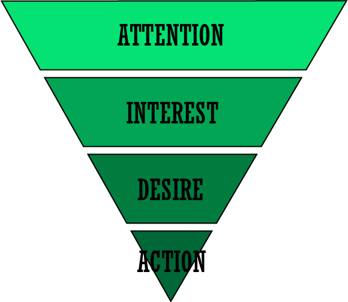
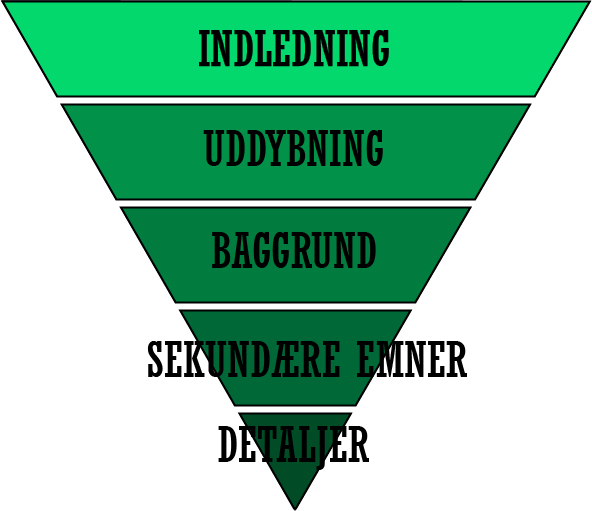

Tekstproduktion
Der findes fem forskellige medietyper/genre:
- En artikel, som kører den klassiske artikelstruktur.
- En brochurer, som kører informationsstruktur.
- En annonce, som kører den traditionelle opbygning.
- En webtekst, som er brugeroplevelser og service for den travle læser.
- En sociale medietekst, hvor der ikke rigtig er nogle regler, da det er meget præget af spontanitet.
Nyhedskriterier
Når man skal skrive en tekst som skal bruges til nyhedsartikler, skal man følge nyhedskriterierne som man er sikker på at man for det hele med.
Det skal være Væsentlighed da det grundlæggende har en betydning eller en konsekvens for mange mennesker.
Det skal være Sensation, altså noget der er fascinerer som læserne gider at læse det eller noget chokerende.
Det skal være Konflikt, da konflikter kan ramme flere og der er mange der har meninger om det.
Det skal være Identifikation, da læseren skal kunne genkende sig selv i det.
Det skal være Aktualitet, det betyder at det er noget der er oppe i tiden, folk giver ikke at hører om en nyhed som er 10 år gamle.
Når alle de her nyhedskriterier spiller sammen, skaber man noget godt indhold.
AIDA modellen
Når man skriver teksten, er det en god ide at have AIDA-Modellen i hovedet Man kan bruge AIDA til rigtig mange tid især inden for multimediedesign faget, man kan nemlig bruge den til plakater og videoer. AIDA-modellen består af fire elementer Attention, Interest, Desire og Action, ved hjælp af disse fire kan man målrette alt hvad man laver efter den bestemte målgruppe.
Nyhedstrekant
Når man skal opbygge en nyhedshistorie, er det en god ide at bruge nyhedstrekanten. Den starter med Indledningen, her fortæller man hurtigt hvem, hvad, hvor og hvornår omkring nyheden. Efterfølgende kommer uddybningen, her informer man med en forklaring på indledningen, efterfuldt af en Baggrund på hvordan nyheden er op stået, man nævner nogle sekundære emner og slutter af med de ”kedelige” detaljer.
Kilder:Tekstprodutions Powerpoint.